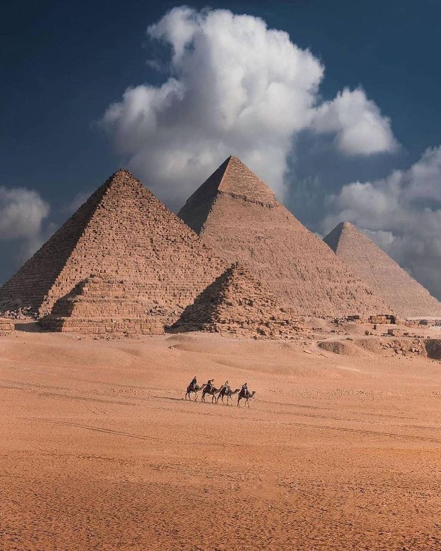
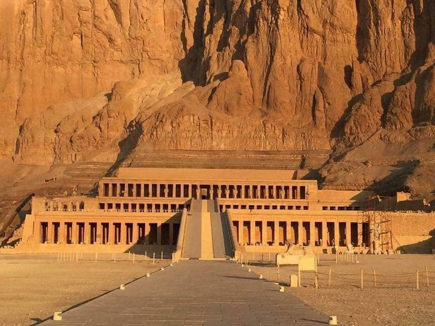
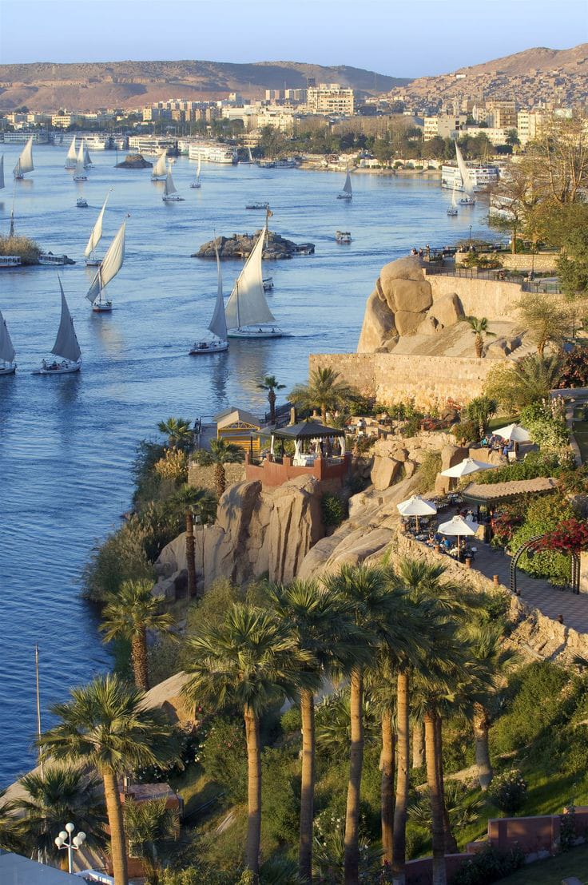
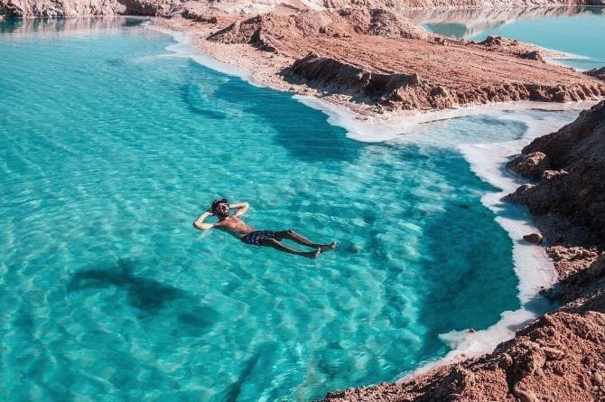

Explora la Tierra de los Faraones: Egipto, un Viaje en el Tiempo y la Grandeza
Explora la majestuosidad de Egipto, una tierra donde la grandeza del pasado se fusiona con la modernidad. Desde las enigmáticas pirámides de Giza hasta los templos
a lo largo del río Nilo, sumérgete en la rica historia y cultura de esta fascinante civilización. Cairo, la bulliciosa capital, combina la tradición con la vida
urbana, mientras que los oasis en el desierto ofrecen una experiencia única. Descubre la magia de Egipto, una tierra que cautiva con sus tesoros ancestrales y su
hospitalidad única. ¡Prepárate para un viaje inolvidable en la tierra de los faraones!
Egipto: Tesoros Milenarios al Descubierto
Desde las icónicas pirámides de Giza hasta los misteriosos templos a lo largo del río Nilo, exploraremos la maravilla arquitectónica y la belleza natural que hacen
de Egipto un destino verdaderamente único. Prepárense para un viaje en el tiempo mientras presentamos una selección cautivadora de los atractivos más destacados de
este país lleno de tesoros históricos.
Pirámides de Giza
Sin duda, uno de los símbolos más reconocidos de Egipto. Las pirámides de Keops, Kefrén y Micerinos son testimonios imponentes de la antigua arquitectura egipcia.
La Gran Esfinge, cercana a las pirámides, añade un toque de misterio al paisaje.

Templos de Luxor y Karnak
Situados a orillas del río Nilo, estos templos ofrecen una inmersión en la grandeza faraónica. Los hipnotizantes obeliscos, estatuas y relieves cuentan la historia
de la civilización egipcia.
Valle de los Reyes
En Luxor, este valle alberga tumbas reales, incluida la famosa tumba de Tutankamón. Las coloridas pinturas murales y la arquitectura funeraria dan vida a la creencia
en la vida después de la muerte.

Asuán y la Alta Presa
La ciudad de Asuán, con su mercado vibrante y la impresionante Alta Presa, ofrece una perspectiva única sobre el desarrollo moderno de Egipto y su relación con el Nilo.

Templo de Abu Simbel
Construido por Ramsés II, este majestuoso templo está tallado en la roca y es famoso por sus cuatro estatuas colosales. Es un testimonio del ingenio arquitectónico de la antigüedad.
Mar Rojo y Hurghada
Para los amantes del buceo y el snorkel, la costa del Mar Rojo, especialmente la ciudad de Hurghada, ofrece aguas cristalinas y arrecifes de coral vibrantes, llenos de vida marina.
El Cairo y el Museo Egipcio
La bulliciosa capital alberga el Museo Egipcio, donde miles de artefactos revelan la historia del antiguo Egipto, incluido el tesoro de Tutankamón.
Oasis de Siwa
Un remanso de paz en el desierto, Siwa cautiva con sus manantiales, palmerales y la fortaleza de Shali, ofreciendo una experiencia única lejos de
las rutas turísticas convencionales.

Egipto en Cinco Días: Entre Pirámides, Nilo y Tesoros Ancestrales
Bienvenidos a un itinerario fascinante que te sumergirá en el corazón de la antigua civilización egipcia en tan solo cinco días. Desde las imponentes Pirámides de Giza
hasta la serenidad del río Nilo, exploraremos los tesoros históricos y las maravillas naturales de Egipto. Prepárate para un viaje inolvidable lleno de cultura, misterio
y belleza, mientras descubrimos la magia de este país milenario
Día 1: Descubriendo El Cairo
Mañana:Llegada al Aeropuerto Internacional de El Cairo y traslado al hotel.
Tarde:Visita a las Pirámides de Giza y la Gran Esfinge. Exploración del Templo del Valle.
Noche:Cena en un restaurante local con vistas a las pirámides.
Día 2: Historia en el Museo Egipcio y Ciudadela de Saladino
Mañana:Recorrido por el Museo Egipcio para explorar sus fascinantes colecciones.
Tarde:Visita a la Ciudadela de Saladino y la Mezquita de Muhammad Alí.
Noche:Cena en un restaurante tradicional en el barrio copto.
Día 3: Vuelo a Luxor y Crucero por el Nilo
Mañana:Vuelo a Luxor y check-in en un crucero por el Nilo.
Tarde:Exploración del Templo de Karnak y el Templo de Luxor.
Noche:Cena a bordo del crucero y entretenimiento nocturno.
Día 4: Valle de los Reyes y Templos de Luxor
Mañana:Excursión al Valle de los Reyes para explorar las tumbas reales.
Tarde:Visita al Templo de Hatshepsut y los Colosos de Memnón.
Noche: Cena a bordo del crucero y tiempo libre.
Día 5: Asuán y Alta Presa
Mañana:Llegada a Asuán y visita a la Alta Presa.
Tarde:Excursión en barco a la Isla Elefantina y el Templo de Philae.
Noche:Cena de despedida en un restaurante con vistas al río Nilo.
Descubre los Costos Detallados de tu Aventura Egipcia de 5 Días
Los costos exactos del viaje puede depender de la temporada del año, las tarifas actuales, la elección de hoteles y restaurantes, y si se aprovechan ofertas o descuentos.
Sin embargo, una estimación general de los costos para un viaje de 5 días y 4 noches en Egipto desde Colombia, asumiendo un presupuesto moderado, es el siguiente.
Vuelos (ida y vuelta desde Bogotá, Colombia a El Cairo, Egipto):
Precio estimado: $1,500 - $2,500 USD por persona.
Hospedaje:
El Cairo (2 noches): $150 - $300 USD.
Luxor (2 noches): $200 - $400 USD.
Transporte interno (vuelo doméstico El Cairo - Luxor):
Precio estimado: $150 - $250 USD por persona.
Comida:
Precio promedio por comida: $10 - $30 USD por persona.
Total estimado para 5 días: $200 - $300 USD por persona.
Nota: Los precios son aproximados y están sujetos a cambios. Se recomienda verificar las tarifas actuales y realizar reservas con anticipación para obtener mejores precios.